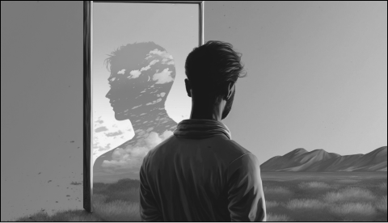
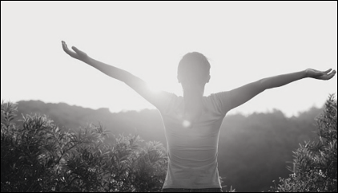
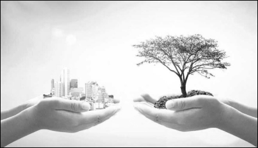
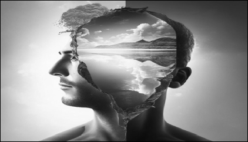
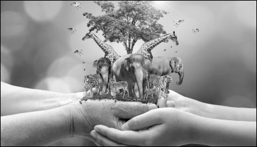

Temaer

Selvrefleksjon
Utforsk egne tanker,
følelser og verdier

Livskvalitet
Oppnå balanse, velvære og harmoni
Rettferdighet
Likestilling og likeverd
for alle

Miljøfilosofi
Moralske forpliktelser overfor miljøet

Selvutvikling
Forbedre og utvikle seg selv

Dypøkologi
Filosofisk og økologisk
tilnærming til naturen